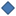

<!doctype html>
<html lang="en">
    <head>
        <meta charset="utf-8">
        <meta http-equiv="X-UA-Compatible" content="IE=edge">
        <meta name="viewport" content="initial-scale=1,user-scalable=no,maximum-scale=1,width=device-width">
        <meta name="mobile-web-app-capable" content="yes">
        <meta name="apple-mobile-web-app-capable" content="yes">
        <link rel="stylesheet" href="css/leaflet.css">
        <link rel="stylesheet" href="css/L.Control.Layers.Tree.css">
        <link rel="stylesheet" href="css/L.Control.Locate.min.css">
        <link rel="stylesheet" href="css/qgis2web.css">
        <link rel="stylesheet" href="css/fontawesome-all.min.css">
        <link rel="stylesheet" href="css/leaflet-search.css">
        <link rel="stylesheet" href="css/nouislider.min.css">
        <link rel="stylesheet" href="css/leaflet.photon.css">
        <link rel="stylesheet" href="css/leaflet-measure.css">
        <style>
        html, body, #map {
            width: 100%;
            height: 100%;
            padding: 0;
            margin: 0;
        }
        #menu {
            position: fixed;
            bottom: 16px;
            left: 16px;
            width: 280px;
            max-height: 320px;
            overflow-y: auto;
            padding: 10px;
            background: rgba(255,255,255,0.97);
            border-radius: 10px;
            box-shadow: 0 2px 15px rgba(0,0,0,0.18);
            z-index: 1000;
        }
        #filter-panel-wrapper {
            font-family: system-ui, -apple-system, BlinkMacSystemFont, 'Segoe UI', sans-serif;
        }
        #filter-panel {
            margin-top: 6px;
        }

        .filter-field {
            margin-bottom: 10px;
            display: flex;
            align-items: center;
        }
        .filter-field label {
            margin: 0;
            margin-left: 6px;
            font-weight: 600;
            font-size: 0.95rem;
            cursor: pointer;
        }
        .filter-field select,
        .filter-field input[type="text"] {
            width: 100%;
            padding: 6px 8px;
            border: 1px solid #ccc;
            border-radius: 4px;
            background: #fff;
            box-sizing: border-box;
        }
        .filter-field input[type="checkbox"] {
            cursor: pointer;
            width: 16px;
            height: 16px;
            margin: 0;
        }
        #filter-reset {
            width: 100%;
            margin-top: 10px;
            padding: 8px;
            border: none;
            border-radius: 4px;
            background: #2E6D9F;
            color: #fff;
            cursor: pointer;
        }
        .map-title {
            padding: 8px 10px;
            background: rgba(255,255,255,0.98);
            border-radius: 4px;
            box-shadow: 0 1px 2px rgba(0,0,0,0.08);
            font-size: 30px;
            font-weight: 700;
            line-height: 1.1;
            text-align: left;
            max-width: 380px;
        }
        </style>
        <title></title>
    </head>
    <body>
        <div id="map">
        </div>
        <script src="js/qgis2web_expressions.js"></script>
        <script src="js/leaflet.js"></script>
        <script src="js/L.Control.Layers.Tree.min.js"></script>
        <script src="js/L.Control.Locate.min.js"></script>
        <script src="js/leaflet-svg-shape-markers.min.js"></script>
        <script src="js/leaflet.rotatedMarker.js"></script>
        <script src="js/leaflet.pattern.js"></script>
        <script src="js/leaflet-hash.js"></script>
        <script src="js/Autolinker.min.js"></script>
        <script src="js/rbush.min.js"></script>
        <script src="js/labelgun.min.js"></script>
        <script src="js/labels.js"></script>
        <script src="js/leaflet.photon.js"></script>
        <script src="js/leaflet-measure.js"></script>
        <script src="js/leaflet-search.js"></script>
        <script src="js/tailDT.js"></script>
<script src="js/nouislider.min.js"></script>
<script src="js/wNumb.js"></script>
        <script src="data/municipalboundary_1.js"></script>
        <script src="data/roadcorridors_2.js"></script>
        <script src="data/publictoilets_3.js"></script>
        <script>
        var highlightLayer;
        function highlightFeature(e) {
            highlightLayer = e.target;

            if (e.target.feature.geometry.type === 'LineString' || e.target.feature.geometry.type === 'MultiLineString') {
              highlightLayer.setStyle({
                color: 'rgba(255, 255, 0, 1.00)',
              });
            } else {
              highlightLayer.setStyle({
                fillColor: 'rgba(255, 255, 0, 1.00)',
                fillOpacity: 1
              });
            }
            highlightLayer.openPopup();
        }
        var map = L.map('map', {
            zoomControl:false, maxZoom:28, minZoom:1
        })
        var hash = new L.Hash(map);
        map.attributionControl.setPrefix('<a href="https://github.com/qgis2web/qgis2web" target="_blank">qgis2web</a> &middot; <a href="https://leafletjs.com" title="A JS library for interactive maps">Leaflet</a> &middot; <a href="https://qgis.org">QGIS</a>');
        var autolinker = new Autolinker({truncate: {length: 30, location: 'smart'}});
        // remove popup's row if "visible-with-data"
        function removeEmptyRowsFromPopupContent(content, feature) {
         var tempDiv = document.createElement('div');
         tempDiv.innerHTML = content;
         var rows = tempDiv.querySelectorAll('tr');
         for (var i = 0; i < rows.length; i++) {
             var td = rows[i].querySelector('td.visible-with-data');
             var key = td ? td.id : '';
             if (td && td.classList.contains('visible-with-data') && feature.properties[key] == null) {
                 rows[i].parentNode.removeChild(rows[i]);
             }
         }
         return tempDiv.innerHTML;
        }
        // modify popup if contains media
        function addClassToPopupIfMedia(content, popup) {
            var tempDiv = document.createElement('div');
            tempDiv.innerHTML = content;
            var imgTd = tempDiv.querySelector('td img');
            if (imgTd) {
                var src = imgTd.getAttribute('src');
                if (/\.(jpg|jpeg|png|gif|bmp|webp|avif)$/i.test(src)) {
                    popup._contentNode.classList.add('media');
                    setTimeout(function() {
                        popup.update();
                    }, 10);
                } else if (/\.(mp3|wav|ogg|aac)$/i.test(src)) {
                    var audio = document.createElement('audio');
                    audio.controls = true;
                    audio.src = src;
                    imgTd.parentNode.replaceChild(audio, imgTd);
                    popup._contentNode.classList.add('media');
                    setTimeout(function() {
                        popup.setContent(tempDiv.innerHTML);
                        popup.update();
                    }, 10);
                } else if (/\.(mp4|webm|ogg|mov)$/i.test(src)) {
                    var video = document.createElement('video');
                    video.controls = true;
                    video.src = src;
                    video.style.width = "400px";
                    video.style.height = "300px";
                    video.style.maxHeight = "60vh";
                    video.style.maxWidth = "60vw";
                    imgTd.parentNode.replaceChild(video, imgTd);
                    popup._contentNode.classList.add('media');
                    // Aggiorna il popup quando il video carica i metadati
                    video.addEventListener('loadedmetadata', function() {
                        popup.update();
                    });
                    setTimeout(function() {
                        popup.setContent(tempDiv.innerHTML);
                        popup.update();
                    }, 10);
                } else {
                    popup._contentNode.classList.remove('media');
                }
            } else {
                popup._contentNode.classList.remove('media');
            }
        }
        var zoomControl = L.control.zoom({
            position: 'bottomright'
        }).addTo(map);
        L.control.locate({position: 'bottomright', locateOptions: {maxZoom: 19}}).addTo(map);
        var measureControl = new L.Control.Measure({
            position: 'bottomright',
            primaryLengthUnit: 'meters',
            secondaryLengthUnit: 'kilometers',
            primaryAreaUnit: 'sqmeters',
            secondaryAreaUnit: 'hectares'
        });
        measureControl.addTo(map);
        // small title in the top-left with brief description
        var titleControl = L.control({position: 'topleft'});
        titleControl.onAdd = function(map) {
            var div = L.DomUtil.create('div', 'map-title');
            div.innerHTML = '<div><strong>Public Restroom Locator for Melbourne CBD</strong></div>';
            return div;
        };
        titleControl.addTo(map);
        document.getElementsByClassName('leaflet-control-measure-toggle')[0].innerHTML = '';
        document.getElementsByClassName('leaflet-control-measure-toggle')[0].className += ' fas fa-ruler';
        var bounds_group = new L.featureGroup([]);
        function setBounds() {
            if (bounds_group.getLayers().length) {
                map.fitBounds(bounds_group.getBounds());
            }
            map.setMaxBounds(map.getBounds());
            map.setMinZoom(map.getZoom());
        }
        map.createPane('pane_ESRIGraylight_0');
        map.getPane('pane_ESRIGraylight_0').style.zIndex = 400;
        var layer_ESRIGraylight_0 = L.tileLayer('https://services.arcgisonline.com/ArcGIS/rest/services/Canvas/World_Light_Gray_Base/MapServer/tile/{z}/{y}/{x}', {
            pane: 'pane_ESRIGraylight_0',
            opacity: 1.0,
            attribution: '',
            minZoom: 1,
            maxZoom: 28,
            minNativeZoom: 0,
            maxNativeZoom: 20
        });
        layer_ESRIGraylight_0;
        map.addLayer(layer_ESRIGraylight_0);
        function pop_municipalboundary_1(feature, layer) {
            layer.on({
                mouseout: function(e) {
                    for (var i in e.target._eventParents) {
                        if (typeof e.target._eventParents[i].resetStyle === 'function') {
                            e.target._eventParents[i].resetStyle(e.target);
                        }
                    }
                    if (typeof layer.closePopup == 'function') {
                        layer.closePopup();
                    } else {
                        layer.eachLayer(function(feature){
                            feature.closePopup()
                        });
                    }
                },
                mouseover: highlightFeature,
            });
            var popupContent = '<table>\
                    <tr>\
                        <td colspan="2">' + (feature.properties['id'] !== null ? autolinker.link(String(feature.properties['id']).replace(/'/g, '\'').toLocaleString()) : '') + '</td>\
                    </tr>\
                    <tr>\
                        <td colspan="2">' + (feature.properties['geo_point_2d'] !== null ? autolinker.link(String(feature.properties['geo_point_2d']).replace(/'/g, '\'').toLocaleString()) : '') + '</td>\
                    </tr>\
                    <tr>\
                        <td colspan="2">' + (feature.properties['mccid_gis'] !== null ? autolinker.link(String(feature.properties['mccid_gis']).replace(/'/g, '\'').toLocaleString()) : '') + '</td>\
                    </tr>\
                    <tr>\
                        <td colspan="2">' + (feature.properties['maplabel'] !== null ? autolinker.link(String(feature.properties['maplabel']).replace(/'/g, '\'').toLocaleString()) : '') + '</td>\
                    </tr>\
                    <tr>\
                        <td colspan="2">' + (feature.properties['name'] !== null ? autolinker.link(String(feature.properties['name']).replace(/'/g, '\'').toLocaleString()) : '') + '</td>\
                    </tr>\
                    <tr>\
                        <td colspan="2">' + (feature.properties['xorg'] !== null ? autolinker.link(String(feature.properties['xorg']).replace(/'/g, '\'').toLocaleString()) : '') + '</td>\
                    </tr>\
                    <tr>\
                        <td colspan="2">' + (feature.properties['mccid_str'] !== null ? autolinker.link(String(feature.properties['mccid_str']).replace(/'/g, '\'').toLocaleString()) : '') + '</td>\
                    </tr>\
                    <tr>\
                        <td colspan="2">' + (feature.properties['xsource'] !== null ? autolinker.link(String(feature.properties['xsource']).replace(/'/g, '\'').toLocaleString()) : '') + '</td>\
                    </tr>\
                    <tr>\
                        <td colspan="2">' + (feature.properties['xdate'] !== null ? autolinker.link(String(feature.properties['xdate']).replace(/'/g, '\'').toLocaleString()) : '') + '</td>\
                    </tr>\
                    <tr>\
                        <td colspan="2">' + (feature.properties['mccid_int'] !== null ? autolinker.link(String(feature.properties['mccid_int']).replace(/'/g, '\'').toLocaleString()) : '') + '</td>\
                    </tr>\
                </table>';
            var content = removeEmptyRowsFromPopupContent(popupContent, feature);
			layer.on('popupopen', function(e) {
				addClassToPopupIfMedia(content, e.popup);
			});
			layer.bindPopup(content, { maxHeight: 400 });
        }

        function style_municipalboundary_1_0() {
            return {
                pane: 'pane_municipalboundary_1',
                opacity: 1,
                color: 'rgba(228,26,28,1.0)',
                dashArray: '',
                lineCap: 'square',
                lineJoin: 'bevel',
                weight: 4.0,
                fillOpacity: 0,
                interactive: false,
            }
        }
        map.createPane('pane_municipalboundary_1');
        map.getPane('pane_municipalboundary_1').style.zIndex = 401;
        map.getPane('pane_municipalboundary_1').style['mix-blend-mode'] = 'normal';
        var layer_municipalboundary_1 = new L.geoJson(json_municipalboundary_1, {
            attribution: '',
            interactive: false,
            dataVar: 'json_municipalboundary_1',
            layerName: 'layer_municipalboundary_1',
            pane: 'pane_municipalboundary_1',
            onEachFeature: pop_municipalboundary_1,
            style: style_municipalboundary_1_0,
        });
        bounds_group.addLayer(layer_municipalboundary_1);
        function pop_roadcorridors_2(feature, layer) {
            layer.on({
                mouseout: function(e) {
                    for (var i in e.target._eventParents) {
                        if (typeof e.target._eventParents[i].resetStyle === 'function') {
                            e.target._eventParents[i].resetStyle(e.target);
                        }
                    }
                    if (typeof layer.closePopup == 'function') {
                        layer.closePopup();
                    } else {
                        layer.eachLayer(function(feature){
                            feature.closePopup()
                        });
                    }
                },
                mouseover: highlightFeature,
            });
            var popupContent = '<table>\
                    <tr>\
                        <td class="visible-with-data" id="seg_descr" colspan="2"><strong>Road Segment</strong><br />' + (feature.properties['seg_descr'] !== null ? autolinker.link(String(feature.properties['seg_descr']).replace(/'/g, '\'').toLocaleString()) : '') + '</td>\
                    </tr>\
                </table>';
            var content = removeEmptyRowsFromPopupContent(popupContent, feature);
			layer.on('popupopen', function(e) {
				addClassToPopupIfMedia(content, e.popup);
			});
			layer.bindPopup(content, { maxHeight: 400 });
        }

        function style_roadcorridors_2_0() {
            return {
                pane: 'pane_roadcorridors_2',
                opacity: 1,
                color: 'rgba(247,247,247,1.0)',
                dashArray: '',
                lineCap: 'butt',
                lineJoin: 'miter',
                weight: 1.0, 
                fill: true,
                fillOpacity: 1,
                fillColor: 'rgba(150,150,150,0.4)',
                interactive: true,
            }
        }
        map.createPane('pane_roadcorridors_2');
        map.getPane('pane_roadcorridors_2').style.zIndex = 402;
        map.getPane('pane_roadcorridors_2').style['mix-blend-mode'] = 'normal';
        var layer_roadcorridors_2 = new L.geoJson(json_roadcorridors_2, {
            attribution: '',
            interactive: true,
            dataVar: 'json_roadcorridors_2',
            layerName: 'layer_roadcorridors_2',
            pane: 'pane_roadcorridors_2',
            onEachFeature: pop_roadcorridors_2,
            style: style_roadcorridors_2_0,
        });
        bounds_group.addLayer(layer_roadcorridors_2);
        function pop_publictoilets_3(feature, layer) {
            layer.on({
                mouseout: function(e) {
                    for (var i in e.target._eventParents) {
                        if (typeof e.target._eventParents[i].resetStyle === 'function') {
                            e.target._eventParents[i].resetStyle(e.target);
                        }
                    }
                    if (typeof layer.closePopup == 'function') {
                        layer.closePopup();
                    } else {
                        layer.eachLayer(function(feature){
                            feature.closePopup()
                        });
                    }
                },
                mouseover: highlightFeature,
            });
            var popupContent = '<table>\
                    <tr>\
                        <td class="visible-with-data" id="name" colspan="2"><strong>Facility</strong><br />' + (feature.properties['name'] !== null ? autolinker.link(String(feature.properties['name']).replace(/'/g, '\'').toLocaleString()) : '') + '</td>\
                    </tr>\
                    <tr>\
                        <th scope="row">Female Toilets</th>\
                        <td class="visible-with-data" id="female">' + (feature.properties['female'] !== null ? autolinker.link(String(feature.properties['female']).replace(/'/g, '\'').toLocaleString()) : '') + '</td>\
                    </tr>\
                    <tr>\
                        <th scope="row">Male Toilets</th>\
                        <td class="visible-with-data" id="male">' + (feature.properties['male'] !== null ? autolinker.link(String(feature.properties['male']).replace(/'/g, '\'').toLocaleString()) : '') + '</td>\
                    </tr>\
                    <tr>\
                        <th scope="row">Wheelchair Access</th>\
                        <td class="visible-with-data" id="wheelchair">' + (feature.properties['wheelchair'] !== null ? autolinker.link(String(feature.properties['wheelchair']).replace(/'/g, '\'').toLocaleString()) : '') + '</td>\
                    </tr>\
                    <tr>\
                        <th scope="row">Baby Facility</th>\
                        <td class="visible-with-data" id="baby_facil">' + (feature.properties['baby_facil'] !== null ? autolinker.link(String(feature.properties['baby_facil']).replace(/'/g, '\'').toLocaleString()) : '') + '</td>\
                    </tr>\
                </table>';
            var content = removeEmptyRowsFromPopupContent(popupContent, feature);
			layer.on('popupopen', function(e) {
				addClassToPopupIfMedia(content, e.popup);
			});
			layer.bindPopup(content, { maxHeight: 400 });
        }

        function style_publictoilets_3_0() {
            return {
                pane: 'pane_publictoilets_3',
                shape: 'diamond',
                radius: 8.8,
                opacity: 1,
                color: 'rgba(50,87,128,1.0)',
                dashArray: '',
                lineCap: 'butt',
                lineJoin: 'miter',
                weight: 2.0,
                fill: true,
                fillOpacity: 1,
                fillColor: 'rgba(72,123,182,1.0)',
                interactive: true,
            }
        }
        map.createPane('pane_publictoilets_3');
        map.getPane('pane_publictoilets_3').style.zIndex = 403;
        map.getPane('pane_publictoilets_3').style['mix-blend-mode'] = 'normal';
        var layer_publictoilets_3 = new L.geoJson(json_publictoilets_3, {
            attribution: '',
            interactive: true,
            dataVar: 'json_publictoilets_3',
            layerName: 'layer_publictoilets_3',
            pane: 'pane_publictoilets_3',
            onEachFeature: pop_publictoilets_3,
            pointToLayer: function (feature, latlng) {
                var context = {
                    feature: feature,
                    variables: {}
                };
                return L.shapeMarker(latlng, style_publictoilets_3_0(feature));
            },
        });
        bounds_group.addLayer(layer_publictoilets_3);
        map.addLayer(layer_publictoilets_3);

        var dataFieldKeys = Object.keys(json_publictoilets_3.features[0].properties).filter(function(key) {
            return ['name', 'id', 'operator', 'lat', 'lon'].indexOf(key) === -1;
        });

        var publicToiletFilters = dataFieldKeys.reduce(function(obj, key) {
            obj[key] = false;
            return obj;
        }, {});

        function setNodeLayerVisibility(layer, visible) {
            if (layer._path) {
                layer._path.style.display = visible ? '' : 'none';
            }
            if (layer.options) {
                layer.options.interactive = visible;
            }
            if (!visible && typeof layer.closePopup === 'function') {
                layer.closePopup();
            }
        }

        function applyPublicToiletFilters() {
            layer_publictoilets_3.eachLayer(function(layer) {
                var properties = layer.feature ? layer.feature.properties : {};
                var visible = true;
                dataFieldKeys.forEach(function(field) {
                    if (visible && publicToiletFilters[field] === true && String(properties[field]).toLowerCase() !== 'yes') {
                        visible = false;
                    }
                });
                setNodeLayerVisibility(layer, visible);
            });
        }

        function labelFromKey(key) {
            var labels = {
                'female': 'Female Facilities',
                'male': 'Male Facilities',
                'wheelchair': 'Wheelchair Accessible',
                'baby_facil': 'Baby Change Facilities'
            };
            return labels[key] || key.replace(/_/g, ' ').replace(/\b\w/g, function(letter) {
                return letter.toUpperCase();
            });
        }

        function buildPublicToiletFilterPanel() {
            var filterPanel = document.getElementById('filter-panel');
            if (!filterPanel) {
                return;
            }
            var container = document.createElement('div');
            container.id = 'filter-fields';
            dataFieldKeys.forEach(function(key) {
                var fieldWrapper = document.createElement('div');
                fieldWrapper.className = 'filter-field';
                var checkbox = document.createElement('input');
                checkbox.type = 'checkbox';
                checkbox.id = 'filter-' + key;
                checkbox.addEventListener('change', function(e) {
                    publicToiletFilters[key] = e.target.checked;
                    applyPublicToiletFilters();
                });
                var label = document.createElement('label');
                label.htmlFor = 'filter-' + key;
                label.textContent = labelFromKey(key);
                fieldWrapper.appendChild(checkbox);
                fieldWrapper.appendChild(label);
                container.appendChild(fieldWrapper);
            });
            filterPanel.appendChild(container);
            var resetButton = document.createElement('button');
            resetButton.id = 'filter-reset';
            resetButton.type = 'button';
            resetButton.textContent = 'Clear filters';
            resetButton.addEventListener('click', function() {
                dataFieldKeys.forEach(function(field) {
                    publicToiletFilters[field] = false;
                    var input = document.getElementById('filter-' + field);
                    if (input) {
                        input.checked = false;
                    }
                });
                applyPublicToiletFilters();
            });
            filterPanel.appendChild(resetButton);
        }

        const url = {"Nominatim OSM": "https://nominatim.openstreetmap.org/search?format=geojson&addressdetails=1&",
        "France BAN": "https://api-adresse.data.gouv.fr/search/?"}
        var photonControl = L.control.photon({
            url: url["Nominatim OSM"],
            feedbackLabel: '',
            position: 'topleft',
            includePosition: true,
            initial: true,
            // resultsHandler: myHandler,
        }).addTo(map);
        photonControl._container.childNodes[0].style.borderRadius="10px"
        // Create a variable to store the geoJSON data
        var x = null;
        // Create a variable to store the marker
        var marker = null;
        // Add an event listener to the Photon control to create a marker from the returned geoJSON data
        var z = null;
        photonControl.on('selected', function(e) {
            console.log(photonControl.search.resultsContainer);
            if (x != null) {
                map.removeLayer(obj3.marker);
                map.removeLayer(x);
            }
            obj2.gcd = e.choice;
            x = L.geoJSON(obj2.gcd).addTo(map);
            var label = typeof obj2.gcd.properties.label === 'undefined' ? obj2.gcd.properties.display_name : obj2.gcd.properties.label;
            obj3.marker = L.marker(x.getLayers()[0].getLatLng()).bindPopup(label).addTo(map);
            map.setView(x.getLayers()[0].getLatLng(), 17);
            z = typeof e.choice.properties.label === 'undefined'? e.choice.properties.display_name : e.choice.properties.label;
            console.log(e);
            e.target.input.value = z;
        });
        var search = document.getElementsByClassName("leaflet-photon leaflet-control")[0];
        search.classList.add("leaflet-control-search")
        search.style.display = "flex";
        search.style.backgroundColor="rgba(255,255,255,0.5)" 

        // Create the new button element
        var button = document.createElement("div");
        button.id = "gcd-button-control";
        button.className = "gcd-gl-btn fa fa-search search-button";

        // Insert the button at the beginning of the search control
        search.insertBefore(button, search.firstChild);
        last = search.lastChild;
        last.style.display = "none";
        button.addEventListener("click", function (e) {
            if (last.style.display === "none") {
                last.style.display = "block";
            } else {
                last.style.display = "none";
            }
        });
        var overlaysTree = [
            {label: ' Public Toilets', layer: layer_publictoilets_3},
            {label: ' Road Corridors', layer: layer_roadcorridors_2},
            {label: "ESRI Gray (light)", layer: layer_ESRIGraylight_0, radioGroup: 'bm' },]
        var lay = L.control.layers.tree(null, overlaysTree,{
            //namedToggle: true,
            //selectorBack: false,
            //closedSymbol: '&#8862; &#x1f5c0;',
            //openedSymbol: '&#8863; &#x1f5c1;',
            //collapseAll: 'Collapse all',
            //expandAll: 'Expand all',
            collapsed: true,
        });
        lay.addTo(map);
        setBounds();
        // Road segment search removed to keep only address search (Photon)
        var searchButtons = document.getElementsByClassName('search-button');
        if (searchButtons.length > 0) {
            searchButtons[0].className += ' fa fa-binoculars';
        }
        var menu = document.createElement('div');
        menu.id = 'menu';
        menu.innerHTML = '<div id="filter-panel-wrapper"><div id="filter-panel"></div></div>';
        document.body.appendChild(menu);
        buildPublicToiletFilterPanel();
        </script>
</body>
</html>
